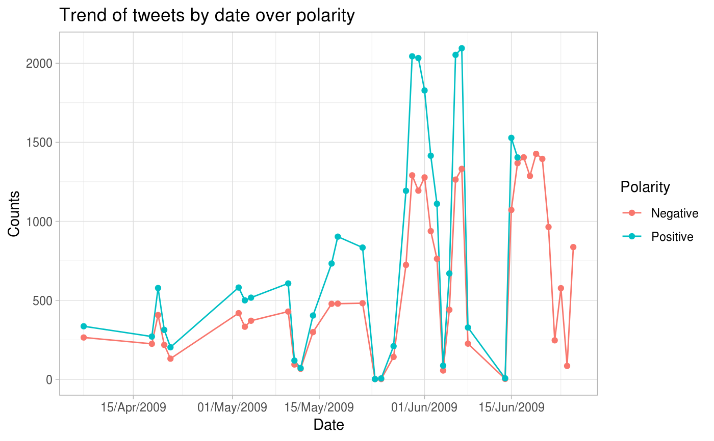
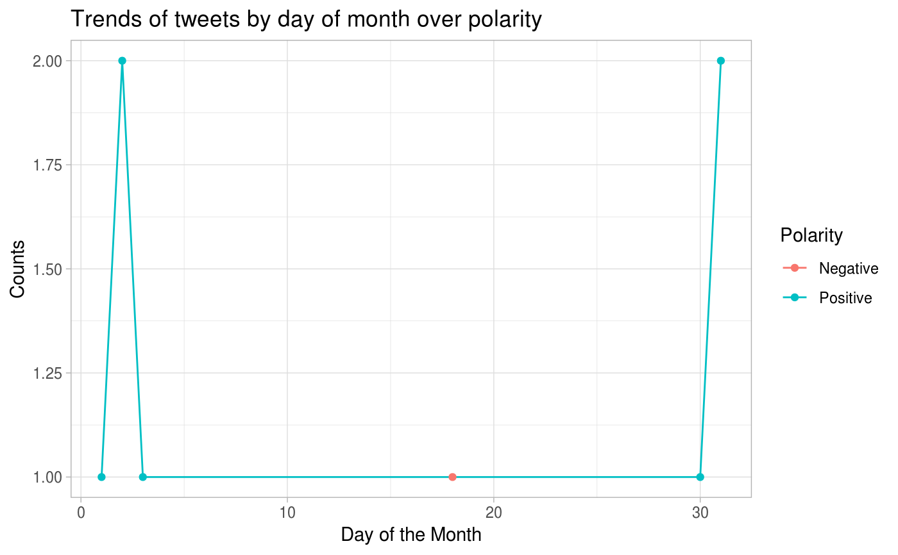

Generate time series plots to analyze given data with filters and visualize over polarity and return the raw data, date/day aggregate data and a plots for the same.
| data | the sentiment140 train or test data containing variables |
|---|---|
| user_list | a vector of users for which to filter the dataset |
| start_date_time | input start_date_time in POSIXct format on which to filter the dataset |
| end_date_time | input end_date_time in POSIXct format on which to filter the dataset |
| keyword_list | a list of string keywords on which to filter the dataset |
a list object with raw filtered dataframe, date_counts aggregated dataframe that holds the frequency counts of date by polarity, day_counts aggregated dataframe that holds the frequency counts of day by polarity and a plots depicting their relationship.
#> $raw #> # A tibble: 8 x 14 #> polarity id date query user text nouns adjectives #> <chr> <int> <dttm> <chr> <chr> <chr> <int> <int> #> 1 Positive 2.00e9 2009-06-02 12:24:13 NO_Q… Dark… @eth… 3 1 #> 2 Positive 1.98e9 2009-05-30 23:38:04 NO_Q… Dark… eatl… 5 0 #> 3 Negative 1.83e9 2009-05-18 11:32:57 NO_Q… Dark… @8dt… 5 2 #> 4 Positive 1.98e9 2009-05-31 13:47:49 NO_Q… Dark… @hel… 1 2 #> 5 Positive 2.00e9 2009-06-02 12:43:59 NO_Q… Dark… @ise… 4 1 #> 6 Positive 1.99e9 2009-06-01 11:51:46 NO_Q… Dark… @hel… 3 0 #> 7 Positive 1.98e9 2009-05-31 13:38:08 NO_Q… Dark… @mbu… 5 1 #> 8 Positive 1.69e9 2009-05-03 11:47:33 NO_Q… Dark… @ohn… 6 3 #> # … with 6 more variables: prepositions <int>, articles <int>, pronouns <int>, #> # verbs <int>, adverbs <int>, interjections <int> #> #> $date_counts #> # A tibble: 6 x 3 #> date polarity count #> <date> <fct> <int> #> 1 2009-05-03 Positive 1 #> 2 2009-05-18 Negative 1 #> 3 2009-05-30 Positive 1 #> 4 2009-05-31 Positive 2 #> 5 2009-06-01 Positive 1 #> 6 2009-06-02 Positive 2 #> #> $day_counts #> # A tibble: 6 x 3 #> day polarity count #> <int> <fct> <int> #> 1 1 Positive 1 #> 2 2 Positive 2 #> 3 3 Positive 1 #> 4 18 Negative 1 #> 5 30 Positive 1 #> 6 31 Positive 2 #> #> $plot_date#> #> $plot_day#>